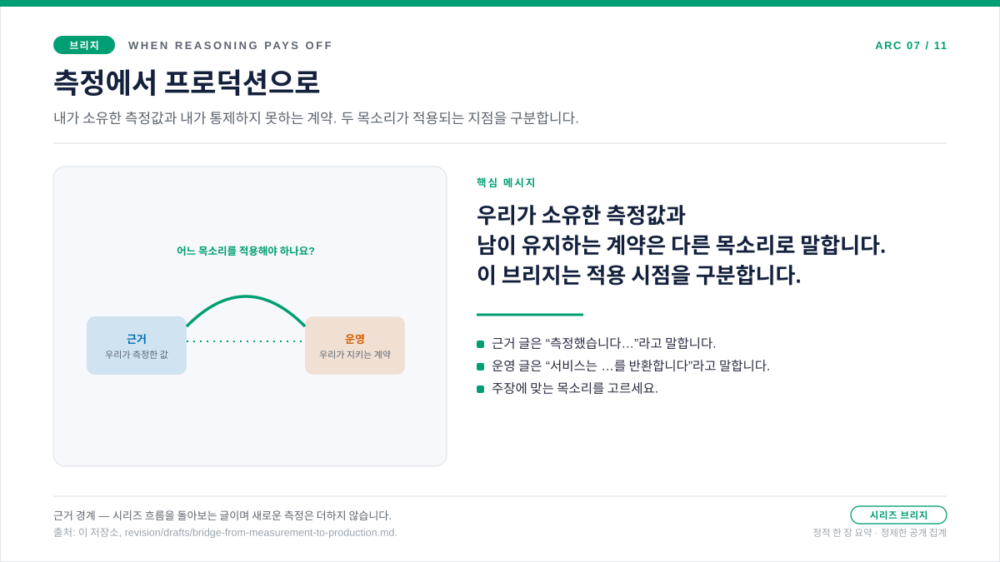

브리지 글 · 근거 레이어와 운영 레이어 사이
측정에서 프로덕션으로
다섯 편의 근거 글을 끝까지 읽고 나면 손에 남는 것은 판정이 아니라 습관입니다. 더 똑똑해 보인다는 이유로 추론 강도를 올리지 말고, 비용·품질·지연 시간·토큰 형태를 함께 읽은 뒤 실제로 효과가 나는 자리에서만 토큰을 더 쓰라는 습관입니다. 그 습관이면 벤치마크에서 강도 수준을 고르기에는 충분합니다. 하지만 살아 있는 서비스를 돌리기에는 아직 부족합니다. 그 선택이 실제 트래픽과 만나는 순간, 질문은 조용히 모양을 바꿉니다. 벤치마크에서 추론이 어디서 효과를 냈는가?를 묻던 자리에서, 요청이 스로틀링되고, 재시도되고, 캐시되고, 스필오버되고, 실제 용량에 맞춰 사이징되는 지금, 그 결정을 어떻게 안전하게 지킬 것인가?를 묻기 시작합니다. 이 브리지는 바로 그 질문의 전환 — 그리고 함께 따라와야 하는 목소리의 전환 — 에 관한 글입니다.

이 브리지가 존재하는 이유
다섯 편의 근거 글은 모두 한 종류의 질문에 답합니다. 추론 토큰은 언제 쓸 가치가 있는가? 그 글들은 할 수 있는 유일하게 정직한 방식으로 답합니다 — 워크로드를 측정하고 비용을 품질·지연 시간·토큰 형태와 견주어 읽는 것입니다. 그런데 배포하고 나면 그 결정은 가만히 있지 않습니다. 같은 프롬프트가 이제 프로덕션 볼륨으로 거듭 도착하고, 다른 실시간 트래픽과 함께 캐시 동작을 거치며, 때로는 429로 되돌아오고, 프로비저닝된 용량을 두고 경쟁합니다. 벤치마크는 토큰을 언제 쓸지를 정리했지만, 테스트 하니스가 아닌 다른 무언가가 조건을 좌우하기 시작한 뒤 그 토큰을 어떻게 계속 쓸지는 아직 아무것도 정리하지 못했습니다.
바로 그 간극이 브리지 페이지가 존재하는 이유 전부입니다. 이것은 또 하나의 측정도 아니고 운영 스펙도 아닙니다 — 둘 사이를 넘기는 인수인계 메모입니다. 근거 레이어는 그 결정을 벌어 오고, 운영 레이어는 벤치마크가 한 번도 본 적 없는 조건에서 그 결정을 지켜 내야 합니다. 인수인계를 소리 내어 말해 두면, 독자가 문서화된 서비스 동작을 우리가 측정한 것으로 여기거나, 우리가 측정한 숫자를 플랫폼의 약속으로 여기는 일을 막습니다. 서로 다른 일, 서로 다른 근거, 서로 다른 목소리 — 이 페이지의 나머지는 그 둘을 가려내는 이야기입니다.
질문
근거 습관은 언제 운영 습관이 되어야 하며, 둘 사이에서 무엇이 이어질까요?
근거
근거 레이어의 다섯 주제 글은 하나의 형태를 공유합니다. 각 글은 워크로드 하나를 — 짧은 사실형 답변, 다단계 추론, 도구 사용 에이전트, 숨은 추론 토큰, 모델링된 PAYG 대 PTU 교차점 — 이름 붙이고, 비용·품질·지연 시간·토큰 구성을 하나의 작은 차트에서 함께 읽습니다. 이 형태는 의도된 설계입니다. “비용 상승”을 가리키는 막대 하나는, “품질 정체”를 가리키는 짝지은 막대 옆에서는 각주에 불과합니다. 루브릭을 통과한 품질 막대 하나도, “지연 시간 증가”를 가리키는 짝지은 지연 시간 막대 옆에서는 각주입니다. 각 글은 절대 수치가 사라져도 살아남는 결정 함의로 마무리합니다.
결정
운영으로 가져갈 것은 절대 수치가 아니라 근거 습관입니다. 운영 글은 벤치마크가 아니라 공식 스펙 위에 얹은 정책으로 쓰입니다. 같은 감사 추적 규율 — Tier 1 문서화된 동작, Tier 2 운영적 추론, 경계가 갈리는 지점에서 분명히 밝히는 근거 경계 — 을 가져와, 벤치마크 결과만으로는 답할 수 없는 질문에 적용합니다.
목소리가 바뀌는 이유
근거 글은 “우리가 측정했다”고 말합니다. 그 목소리는 측정에 맞습니다. 결과를 소유하고, 잡음을 함께 지며, 독자가 표본을 두고 반박할 여지를 남깁니다. 운영 글은 “Microsoft Learn이 문서화한 계약은 이렇다”고 말합니다. 그 목소리는 계약에 맞습니다. 출처를 가리키고, 보장된 것과 추론된 것을 분리하며, 운영자가 재실행을 기다리지 않고 행동하게 합니다.
벤치마크 목소리는 답이 우리가 소유한 측정값에서 나올 때 적절합니다. 운영 목소리는 답이 남이 유지하는 계약에서 나오고, 우리가 그것을 런북으로 옮길 때 적절합니다. 둘을 섞으면 — 문서화된 동작을 두고 “우리가 측정했다”고 하거나, 우리가 직접 돌린 강도별 비용 곡선을 두고 “Microsoft Learn이 보장한다”고 하면 — 양쪽 모두 약해집니다. 이 구분은 비일관성이 아니라 의도된 설계입니다.
실무에서는 세 곳에서 드러납니다.
- 시제. 근거 글은 측정 결과를 과거형으로 씁니다(“minimal 강도는 요청당 평균 $0.000663”). 운영 글은 계약 동작을 현재형으로 씁니다(“서비스는
retry-after-ms헤더와 함께 429를 반환합니다”). - 출처. 근거 글은 이 저장소의
analysis.json산출물을 인용합니다. 운영 글은 접근 날짜와 함께 Microsoft Learn 페이지를 인용하고, 문서가 침묵할 때만 저장소 측정값으로 물러섭니다. - 맺음줄. 근거 글은 “무엇을 배웠는가”나 “운영자 플레이북”으로 끝납니다. 운영 글은 “실무 규칙”으로 끝납니다. 맺음줄은 독자가 방금 읽은 근거가 어떤 종류인지를 알려 줍니다.
두 레이어가 공유하는 것
세 가지 습관이 양방향으로 브리지를 건넙니다.
첫째는 함께 읽기입니다. 벤치마크 레이어는 비용을 결코 혼자 읽지 않습니다. 비용을 품질·지연 시간·토큰 구성과 나란히 읽습니다. 운영 레이어도 한 신호를 혼자 읽지 않습니다. retry-after-ms를 그 대기를 책임지는 지연 시간 정책과 나란히 읽고, 캐시 적중률을 첫 토큰 지연 시간과 나란히 읽으며, max_output_tokens를 입장 동시성과 나란히 읽습니다. 질문의 형태는 바뀌어도, 두 가지를 한 번에 보는 습관은 바뀌지 않습니다.
둘째는 근거 경계입니다. 모든 벤치마크 글은 측정이 무엇을 다루고 무엇을 다루지 않는지를 밝힙니다 — 조합당 N = 20 작성 표본, R = 3 반복, 공개 집계 구간, 정가 기준만. 모든 운영 글도 같은 것을 다른 어휘로 밝힙니다 — Tier 1 스펙 대 Tier 2 추론, 공개 매니페스트 대 비공개 아카이브, 접근 날짜가 박힌 인용 대 운영 경험칙. 경계를 분명히 밝히면 독자가 어느 쪽 근거든 보장으로 과대 해석하는 일을 막습니다.
셋째는 다음 동작입니다. 각 근거 글은 워크로드 형태가 바뀌면 다음 실험이 무엇일지를 말하며 끝납니다. 각 운영 글은 다음 관측이 운영자에게 무엇을 알려 줄지를 말하며 끝납니다. 두 경우 모두 산출물은 판정이 아니라 결정 프레임입니다.
운영 레이어에서 진짜로 새로운 것
근거 레이어가 닿을 수 없는 세 가지가 운영 레이어에서 등장합니다.
헤더 계약이 등장합니다. retry-after-ms, 스필오버 헤더, 캐시 일치 조건은 측정값이 아니라 서비스가 하는 약속입니다. 벤치마크 결과만으로는 그 약속이 옳은지 판정할 수 없습니다. 운영 글은 그 약속을 꼼꼼히 읽고, 그것이 무엇을 약속하고 무엇을 약속하지 않는지를 적어 둡니다.
라우팅 표면이 등장합니다. prompt_cache_key는 메타데이터 태그가 아니라, 프리픽스 해시와 결합한 라우팅 친화도 제어입니다. 캐시 리텐션은 부수 효과가 아니라, 데이터 위치 차원을 가진 요청별 정책 선택입니다. 이는 워크로드가 배포 위에서 돌기 시작한 뒤에야 나타나는 운영 형태의 질문입니다.
사이징 변환이 등장합니다. 마이그레이션 사이징 글은 같은 측정 습관을 가져와 프로비저닝된 처리량 사이징으로 되돌려 보냅니다. 그 차트의 숫자는 예시이며 — 용량 결과가 아니라 계산이라고 명시적으로 표시됩니다 — 다만 그 규율은 벤치마크 글이 훈련시킨 규율과 같습니다. 보이는 출력을 재고, 숨은 추론을 재고, 캐시된 입력을 재고, 응답 천장을 재고, 그런 다음에야 배포 크기를 정합니다.
근거 글을 읽은 뒤 운영 글을 읽는 법
같은 읽기 동작이 두 레이어 모두에서 통합니다. 먼저 메타 헤더 — 질문·근거·결정 — 를 읽고, 그 페이지가 내가 물으러 온 것을 묻고 있는지 판단합니다. 본문은 메커니즘과 함의를 위해 읽습니다. 출처는 근거 경계를 확인하기 위해 읽습니다. 경계가 자신의 상황에 맞을 때만 그 결정을 앞으로 가져갑니다.
근거 글에서 경계는 “측정 범위”입니다 — 하나의 테넌트, 하나의 리전, 하나의 가격 스냅샷에서 N = 20 표본으로 잰 구간입니다. 운영 글에서 경계는 “운영 경계”입니다 — 접근 날짜 기준으로 Microsoft Learn이 문서화한 내용에, 이 저장소가 기꺼이 방어할 작은 운영적 추론 묶음을 더한 범위입니다. 경계는 다르지만, 규율은 같습니다.
출처 · 근거 경계
출처와 근거 경계
이 브리지 글은 새로운 측정이나 새로운 스펙 인용을 도입하지 않습니다. 두 레이어를 잇는 편집 계약을 진술할 뿐입니다. 링크된 글 안에서 인용된 출처가 브리지 양쪽에 각각 적용됩니다.
- 근거 쪽 인용: 글별
analysis.json산출물, 실행 시점에 적용된 가격 스냅샷, 그리고docs/05-methodology.md의 방법론 계약. - 운영 쪽 인용: 접근 날짜가 박힌 Microsoft Learn 제품 문서,
docs/15-spec-vs-inference-taxonomy.md의 스펙 대 추론 분류 체계, 그리고docs/16-release-tiers-and-redaction-policy.md의 릴리스 계층 정의.
실무 규칙
실무 규칙: 근거 레이어는 토큰을 쓸 권리를 얻고, 운영 레이어는 배포가 가동된 뒤에도 그 토큰을 계속 쓸 권리를 얻습니다. 그 순서대로 읽고, 각 레이어가 자신의 근거 경계를 스스로 정하게 하세요.
다음: 429: 단순한 오류가 아닌 복구 신호 — PTU 용량이 “대기 필요”를 신호할 때, 클라이언트는 다음 동작을 어떻게 정해야 할까요?